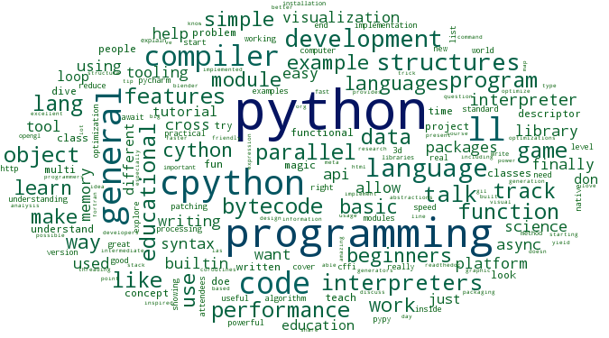
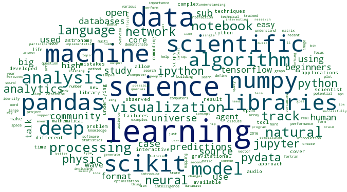
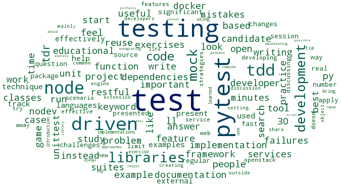
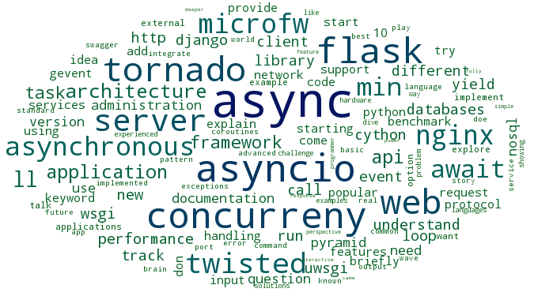
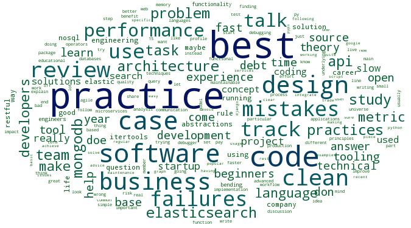
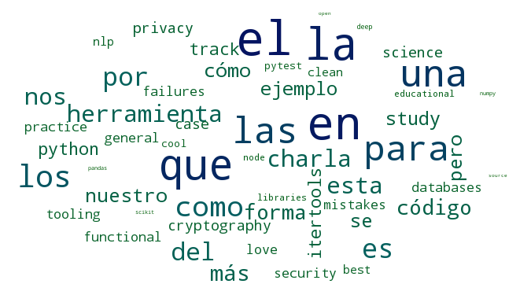

Topics in EuroPython's talks
Too many abstracts to browse?
Here is a list of topics and related talks, automatically extracted with data-science . Code

python programming
- Sponsored talk: Hired
- Peeking into Python’s C API
- Using and abusing Python’s double-underscore methods and attributes
- Go for Python Programmers
- FAT Python: a new static optimizer for Python 3.6
- Learn Python The Fun Way
- Exploring Python Bytecode
- Iteration, iteration, iteration
- Exploring our Python Interpreter
- It's not magic: descriptors exposed

learning science
- High Performance Python on Intel Many-Core Architecture
- An Introduction to Deep Learning
- Deep Learning with Python & TensorFlow
- Introduction to Deep Learning for Natural Language Processing
- Machine Learning: Power of Ensembles
- A Gentle Introduction to Neural Networks (with Python)
- How can machine learning help to predict changes in size of Atlantic herring ?
- I Hate You, NLP... ;)
- Machine Learning for dummies with Python
- PyMICE - a library for analysis of IntelliCage™ data

test testing
- Test-driven code search and the art of writing implementation-agnostic tests
- Test-driven code search and reuse coming to Python with pytest-nodev
- pytest - simple, rapid and fun testing with Python
- Effectively test your webapp with Python and Selenium
- Property-based testing with Hypothesis
- System Testing with pytest and docker-py
- TDD of Python microservices
- Managing Mocks
- Writing unit tests for C code in Python
- Pytest desde las trincheras
docker infrastructure
- Using Service Discovery to build dynamic python applications
- Infrastructure as Code: "pip install" your environment
- Deploying Django at scale: what happens inside the cloud
- High Availability Scaling with Share Nothing Architecture
- Real virtual environments without virtualenv
- Analyzing Data with Python & Docker
- Automate, contribute, repeat.
- Hyperconvergence meets BigData
- So, what's all the fuss about Docker?
- Python in Production Engineering

async asyncio
- Asynchronous network requests in a web application
- uWSGI: the full stack application server
- The Report Of Twisted’s Death
- AsyncIO support for new comers
- Writing Redis in Python with asyncio
- async/await in Python 3.5 and why it is awesome
- Present-day Async Web development training: from Twisted to Tornado and AsyncIO
- High Performance Networking in Python
- Introduction to aiohttp
- Python and Async programming

community psf
- Come for the Language, Stay for the Community
- import community
- PSF Meeting
- DOCtors are in!
- Pytest 3.0
- Plone, the premier Python CMS and intranet
- Publish your code so others can use it in 5 easy steps
- Code analysis made super easy.
- The Journey from Python Developer to Python Company Owner
- What Python can learn from Haskell packaging

practice best

iot internet
- MicroPython on the BBC micro:bit
- A Million Children (and MicroPython)
- The Router Game
- Using Python on the BBC micro:bit in informal learning environments
- MiniBrew: Brewing beer with Python
- Keeping the Lights on with Python
- Server for IoT devices and Mobile devices using Wifi Network,
- Raspberry Pi GPIO Zero
- Scaling Microservices with Crossbar.io
- Making robots walk with Python

el en
- Kung Fu al amanecer con itertools
- Implementación de un Identificador de Sonido en Python
- Pytest desde las trincheras
- Un vector por tu palabra
- Entendiendo Unicode
- Hacking ético con herramientas Python
- Buildout Django eta Fabric. Kasu praktikoa euskarazko tokiko hedabideetan
- Game Theory to the Rescue When Hard Decisions Are to Be Made